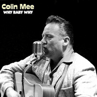

Colin Mee - Why Baby Why (Album, 2019)
01 - Why Baby Why (2:38)
02 - I Guess Things Happen That Way (1:53)
03 - Pistol Packin' Mama (2:49)
04 - Make The World Go Away (2:38)
05 - Crazy Arms (2:44)
06 - But I Do (3:08)
07 - Setting The Woods On Fire (2:35)
08 - Blue Blue Day (1:56)
09 - One Minute Past Eternity (2:04)
10 - I Still Miss Someone (2:20)
11 - Walk On By (2:10)
12 - Ballad Of A Teenage Queen (2:12)
13 - There Stands The Glass (2:35)
14 - It's Late (1:58)
© Skip Records :: [SKCD-17]
Notes
Review
012/366 (Project 366)
Countrified hillbilly and rockabilly artist! Country powered with influence of rustic Rock'N'Roll. Wonderful sound, perfect quality, authentic mood. Always.
"Why Baby Why" is a solo release by Colin Mee, but with the help of a lot of musicians and using different musical instruments. Created mood is a pretty authentic Country pop. The album contains hits of Country, Hillbilly, Rockabilly and related genres written or performed by the greatest musicians and artists like George Jones, Hank Williams, Johnny Cash, Mac Curtis, Ray Price, Eddy Arnold, Jerry Lee Lewis, Webb Pierce, Jack Clement, Hank Cochran, Sam Phillips and others. Cover versions are performed at a very high level of quality and are extremely close to the original sound. Wherein, it sounds very good even in the sense of modern quality. Perfect sensations from this indeed very pleasant music.
I just do not even want to write anything else. I want to listen to it! Hear it! Indescribable sense of truthfulness. I can not to call it as a music. No. It is a magic! The mood immediately rises and there is a desire to dance to the most bright and melodious songs. Well, at least nod to the beat and tap with your feet. And, of course, smile. Tremulous feelings appear with the most lyrical compositions. Empathy for the rest.
Oh, I will try to describe my impressions. When I could... to stop spinning these records.